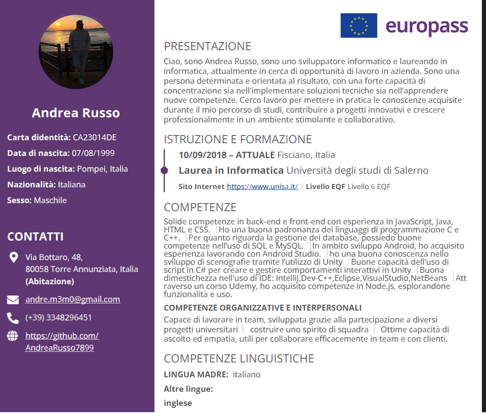

🎮 My Web Projects
- ❓ Guess My Number – A fun number guessing game
- 🎲 Pig Game – A strategic turn-based dice game
- 💰 Modal Project – Interactive modal pop-ups and UI elements [In development 🚀]
📌 Project Descriptions
Guess My Number – An engaging game where players guess a secret number between 1 and 20. Demonstrates DOM manipulation, event handling, and real-time feedback.
Pig Game – A turn-based dice game mixing luck & strategy. Highlights JavaScript logic, score tracking, and interactive gameplay.
Modal Project – A showcase of modal pop-ups for user interaction. Includes dynamic UI updates, event-driven programming, and form handling.
🛠️ Key Skills Developed
- ✅ HTML structure and semantic elements
- ✅ CSS styling and responsive design
- ✅ JavaScript: DOM manipulation & event handling
- ✅ Creating interactive user experiences (games & modals)
- ✅ Project management & GitHub version control
📑 Curriculum Vitae
😁 Clicca sull’immagine qui sotto per aprire il mio CV completo in PDF:
